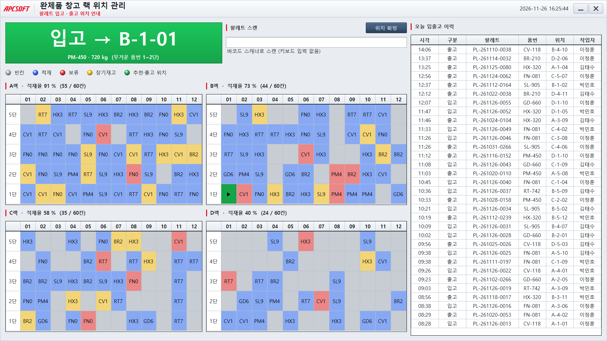
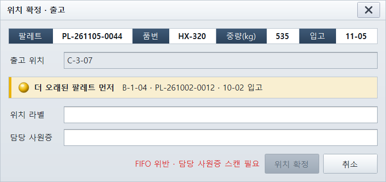
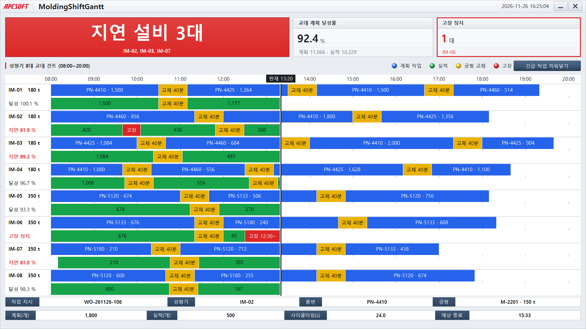
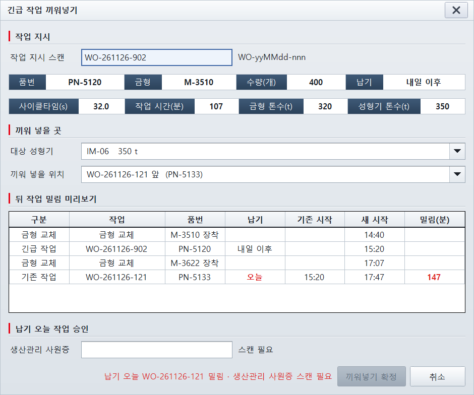
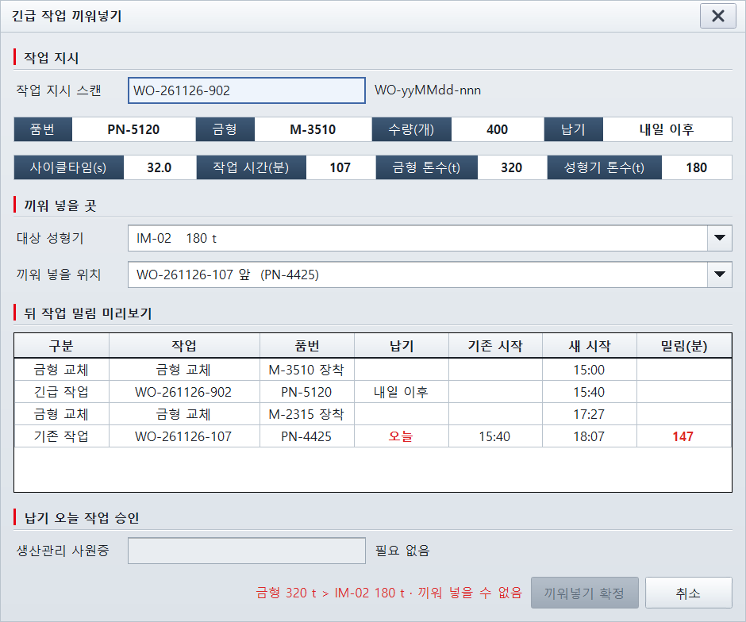
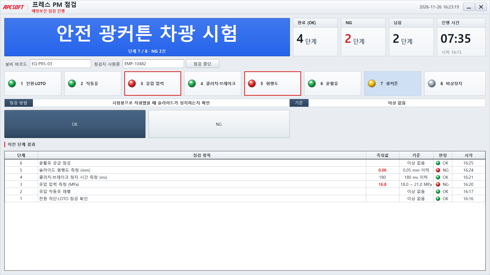
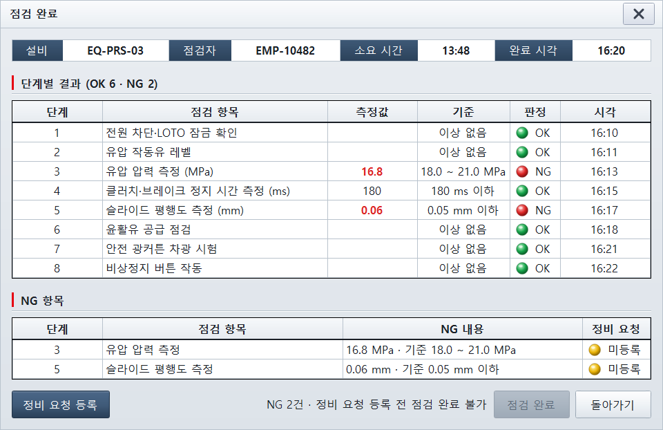

지금까지 시연은 데모 템플릿(작업 시작·판정·설비 상태·이력·추이 등)과 비슷한 구성이었습니다. 이번에는 템플릿에도 전용 컨트롤에도 없는 화면 형태 세 가지를 골라, 스킬이 기존 컨트롤로 새 레이아웃을 만들어 내는지 봤습니다. 세 에이전트 모두 빌드 경고·오류 0, render 점검 0건으로 끝났고 요청 항목을 빠뜨리지 않았습니다. 셋 다 새 형태를 표현했지만, 각자 스킬 규칙 하나와 부딪혀 우회했습니다.
이전 시연과 같은 10항목 × 2점입니다. ✓ 2점, △ 1점, ✗ 0점. 5번만 이번 목적에 맞춰 "템플릿에 없는 핵심 레이아웃을 표현했는가"로 바꿨습니다. 샘플 합계 정합성은 채점하지 않고 경계값 샘플만 봅니다.
| # | 항목 | N1 | N2 | N3 |
|---|---|---|---|---|
| 1 | 3초 안에 알아야 할 것이 맨 위에 가장 크게 | ✓ | ✓ | ✓ |
| 2 | 주 동작이 스캔과 큰 버튼 | △ | ✓ | ✓ |
| 3 | 메인 화면이 막고 이유를 글로 보임 | ✓ | ✓ | ✓ |
| 4 | dialog 차단 규칙(요청의 "할 수 없다") | ✓ | ✓ | ✓ |
| 5 | 새 레이아웃 표현(랙 맵 / 간트 / 단계 진행) | ✓ | ✓ | ✓ |
| 6 | 레이아웃 마무리(겹침·빈 곳·과대 요소) | ✓ | △ | △ |
| 7 | 빌드 0/0, render 점검 0건 | ✓ | ✓ | ✓ |
| 8 | 요청 항목 누락 없음 | ✓ | ✓ | ✓ |
| 9 | 경계값 샘플 | △ | △ | ✓ |
| 10 | 지침 피드백의 쓸모 | ✓ | ✓ | ✓ |
| 합계 | 18 | 18 | 19 |
apc-field-ui 스킬로 APCSOFT 현장 PC 프로그램 화면을 만든다. 먼저 Skill 도구로 apc-field-ui 스킬을 불러 그 지침을 끝까지 따른다(Skill 도구가 없을 때만 Read로 `C:\Users\rladb\.claude\skills\apc-field-ui\SKILL.md`를 읽는다). 앱 exe를 실행했으면 끝나기 전에 닫는다. - 작업 폴더: C:\00P_apc-field-ui\skill-test\demo-1126-n$1\project (Git Bash: /c/00P_apc-field-ui/skill-test/demo-1126-n/<시연>/project) - render PNG: C:\00P_apc-field-ui\skill-test\demo-1126-n$1\out\<형식이름>.png - 고객사 default. 사용자에게 질문할 수 없다 — 빠진 값은 아래 도메인 정보로 정하고 "정한 기준값"으로 보고한다. - 저장소의 다른 파일은 고치지 않는다. git 명령 금지. UI·UX 기준: 실제 현장에 설치할 화면이다. - 이 화면 사용자가 3초 안에 알아야 할 것이 가장 크게, 가장 위에 보이게 한다. - 작업자는 바코드 스캐너와 마우스를 쓴다. 주 동작은 스캔과 큰 버튼, 키보드 입력은 최소로. - 막아야 하는 동작(NG·인터락·조건 미충족)은 화면이 막고, 막은 이유를 글로 보여 준다. 끝나면 보고: 1) 만든 화면·dialog와 PNG 경로 2) 마지막 render 점검 건수, 빌드 경고·오류 수 3) UX 결정 3~5줄 4) 정한 기준값 5) 스킬 지침에서 막히거나 모호했던 점(특히 기존 템플릿·컨트롤로 표현하기 어려워 직접 만든 부분과 그 방법). 스킬이 확인 질문을 요구하면 그 형식대로 함께 보고한다.
세 화면 모두 전용 컨트롤이 없었습니다. 에이전트가 고른 대체 방법과, 그때 부딪힌 스킬 규칙입니다.
| 시연 | 필요한 형태 | 만든 방법 | 부딪힌 규칙 | 결과 |
|---|---|---|---|---|
| N1 | 랙 칸 색 맵(5 × 12 × 4) | 랙마다 ApcGrid 하나, 칸 배경을 상태색(흰색에 섞어 연하게), 글자는 품번 약어 | "행 배경을 상태색으로 칠하지 말 것" | 읽기 쉬움. 상태가 색으로만 구분돼 범례에 기댐 |
| N2 | 간트(계획·실적 막대, 시간축, 현재 시각선) | Panel 상속 GanttBoard에 표준 Label을 좌표 계산으로 배치(직접 그리기 없음) | "표에 없는 요소는 만들지 말 것", "직접 그리기 금지", render 겹침 점검 | 간트로 잘 읽힘. 겹침 점검을 피하려고 막대를 쪼개고 눈금을 점선으로 우회 |
| N3 | 단계 진행 표시 + 현재 단계 크게 | ApcStatusTile 8개를 한 줄로, 판정판에 지금 할 단계 이름, 상태별 입력 줄 3개를 Visible로 전환 | "판정판은 OK/NG/대기" | 자연스러움. 현재 단계 색(타일 노랑)과 판정판 색(파랑)이 다름 |
## 화면 요청 완제품 창고 랙 위치 관리 프로그램. 프로젝트명 FgRackLocator. 목적: 팔레트 입고 위치 지정 + 출고 위치 안내(선입선출). 사용자: 창고 지게차 기사·창고 담당 — 창고 입구 현장 PC. 메인 화면: 랙 A~D 4줄 위치 맵(랙마다 5단 × 12열 칸, 칸 색 = 빈칸/적재/보류/장기재고, 칸에 품번 약어 표시), 팔레트 바코드 스캔 칸, 스캔하면 입고 추천 위치 또는 출고 대상 위치를 맵에서 강조, 랙별 적재율, 오늘 입출고 이력 표(시각·구분·팔레트·품번·위치·작업자). dialog: 위치 확정(스캔한 팔레트 정보 읽기 전용, 추천 위치, 위치 라벨 스캔으로 확정). 추천 위치와 다른 칸 라벨을 스캔하면 막고, 출고는 같은 품번의 더 오래된 팔레트가 있으면 막는다(담당 사원증 스캔 시 예외 허용). ## 도메인 정보 - 위치 코드: 랙-단-열, 예 B-3-07. 1칸 = 팔레트 1개. - 무거운 품번(팔레트 600 kg 초과)은 1~2단에만 입고. - 장기재고 = 입고 30일 초과. 보류 = 품질 보류 팔레트(출고 불가). - 팔레트 바코드 PL-yyMMdd-nnnn, 위치 라벨 LOC-B-3-07. - 표시 형식: 시각 HH:mm, 날짜 MM-dd, 중량 kg 정수, 적재율 % 정수.


ApcGrid 4개로 만들어 단·열 머리글이 그대로 위치 코드(B-1-01)가 됩니다.확인 질문 8개(기준값 2 · 해석 3 · 배치 2 · 데이터 1). 모두 "A로 했습니다. B로 할까요?" 형식입니다. 에이전트 보고 원문은 N1-rackmap/REPORT.md.
| 항목 | 점수 | 근거 |
|---|---|---|
| 1 3초 정보 | ✓ | 맨 위 초록 판정판 "입고 → B-1-01" + 무거운 품번 이유 |
| 2 주 동작 | △ | 스캔 중심은 맞으나 [위치 확정]이 스캔 제목줄 오른쪽 작은 버튼 |
| 3 메인 막기 | ✓ | 보류·빈칸 없음·FIFO를 판정판 글 + 확정 꺼짐(코드 기준, PNG는 입고 상태 한 장) |
| 4 dialog 차단 | ✓ | "더 오래된 팔레트 먼저" 경고 띠 + "FIFO 위반 · 담당 사원증 스캔 필요" + 확정 꺼짐 |
| 5 새 레이아웃(랙 맵) | ✓ | 랙 4개 × 5단 × 12열 칸 색 맵, 품번 약어, 추천 칸 초록 ▶, 랙별 적재율. ApcGrid 칸 배경으로 구현 |
| 6 레이아웃 마무리 | ✓ | 맵·이력이 화면을 고르게 채움. 스캔 칸 아래 약간 빈 곳 외 문제 없음 |
| 7 빌드·점검 | ✓ | 0/0, 0건 |
| 8 요청 항목 | ✓ | 맵·스캔·강조·적재율·이력·dialog 전부. "4줄"을 2×2로 바꾼 것은 확인 질문 7로 보고 |
| 9 경계값 샘플 | △ | 600 kg·30일 경계에 딱 걸리는 샘플 없음 |
| 10 지침 피드백 | ✓ | 칸 단위 상태색 허용 여부, Titled 제목 갱신 수단 없음, 표 Fill 높이, 스캔칸 둘일 때 분배 |
| 합계 | 18 |
## 화면 요청 사출 성형기 교대 생산 계획 간트 보드. 프로젝트명 MoldingShiftGantt. 목적: 교대 중 계획 대비 진행 확인 + 긴급 작업 끼워넣기. 사용자: 사출 반장·생산관리 — 사출동 현장 PC. 메인 화면: 성형기 8대(IM-01~IM-08) × 주간 교대(08:00~20:00) 시간축 간트. 설비 한 줄마다 계획 작업 막대(품번·수량), 그 아래 실적 막대, 금형 교체 구간과 비가동(고장) 구간을 다른 표시로, 현재 시각 세로선. 위쪽에 교대 계획 달성률과 지연 설비 수. 막대를 누르면 작업 상세(품번·금형·계획/실적 수량·사이클타임·예상 종료). dialog: 긴급 작업 끼워넣기(작업 지시 바코드 스캔, 대상 성형기 선택, 끼워 넣을 위치 선택, 뒤 작업이 밀리는 결과 미리보기). 금형이 대상 성형기 톤수에 맞지 않으면 막고, 밀린 작업 중 납기가 오늘인 것이 생기면 생산관리 사원증 스캔 없이는 확정할 수 없다. ## 도메인 정보 - 성형기 톤수: IM-01~04 180 t, IM-05~08 350 t. 금형마다 필요 톤수가 있다(예 M-2201 150 t, M-3510 320 t). - 금형 교체 표준 40분. 작업 사이에 품번이 바뀌면 자동 삽입. - 지연 = 현재 시각 기준 실적이 계획보다 10% 이상 적음. - 작업 지시 바코드 WO-yyMMdd-nnn. - 표시 형식: 시각 HH:mm, 수량 정수(천 단위 쉼표), 사이클타임 초 0.0, 달성률 % 0.0.



확인 질문 7개(기준값 2 · 해석 2 · 배치 1 · 데이터 2). 모두 "A로 했습니다. B로 할까요?" 형식입니다. 에이전트 보고 원문은 N2-gantt/REPORT.md.
| 항목 | 점수 | 근거 |
|---|---|---|
| 1 3초 정보 | ✓ | 맨 위 빨간 판정판 "지연 설비 3대" + 설비 이름 |
| 2 주 동작 | ✓ | 막대 클릭 + [긴급 작업 끼워넣기] 하나, dialog는 스캔·선택만 |
| 3 메인 막기 | ✓ | 메인 화면에서 막을 동작은 없음. 지연·고장을 설비 이름 아래 글로 표시 |
| 4 dialog 차단 | ✓ | 톤수 부적합 / 납기 오늘 밀림 두 상태를 PNG 2장으로, 확정 꺼짐 + 이유 글 |
| 5 새 레이아웃(간트) | ✓ | 계획·실적 두 줄, 교체·고장 구분, 현재 시각선, 시간 눈금, 범례까지 표준 Label로 조립 |
| 6 레이아웃 마무리 | △ | 현재 시각선에서 계획 막대가 쪼개져 글자 없는 파란 조각이 생김(IM-02·IM-04 등), 눈금선이 행 사이 점선뿐, 미리보기 표 아래 빈 행 |
| 7 빌드·점검 | ✓ | 0/0, 0건(3개 형식) |
| 8 요청 항목 | ✓ | 8대 간트·계획/실적·교체·고장·현재선·달성률·지연 수·막대 상세·dialog 미리보기 전부 |
| 9 경계값 샘플 | △ | "정확히 10%도 지연"을 정했지만 샘플에 경계(90.0 %) 설비가 없음 |
| 10 지침 피드백 | ✓ | 간트 컨트롤 부재와 "직접 그리기 금지" 사이 기준 공백, 겹침 점검이 시각선·눈금선을 못 허용 |
| 합계 | 18 |
## 화면 요청 프레스 설비 예방보전(PM) 점검 진행 프로그램. 프로젝트명 PressPmChecklist. 목적: 정해진 순서대로 점검 항목을 하나씩 진행하고 결과를 남긴다. 사용자: 보전 작업자 — 프레스 라인 옆 현장 PC. 메인 화면: 점검 대상 설비 사원증·설비 바코드 스캔으로 시작. 점검 단계 진행 표시(전체 단계 중 현재 위치, 완료/NG/남음), 현재 단계 하나를 크게(항목명, 점검 방법 설명, 기준, 입력: OK/NG 버튼 또는 측정값), 이전 단계 결과 목록, 진행 시간. 현재 단계를 끝내기 전에는 다음 단계로 갈 수 없다. 안전 단계(전원 차단·잠금 확인)는 완료 전 모든 다른 단계를 막는다. dialog: 점검 완료(설비·점검자·소요 시간·단계별 결과 요약 읽기 전용, NG 항목 목록). NG 항목이 있으면 정비 요청 등록 없이는 "점검 완료"로 닫을 수 없다. ## 도메인 정보 - 점검 항목(순서대로): 1 전원 차단·LOTO 잠금 확인(안전) / 2 유압 작동유 레벨 육안 OK/NG / 3 유압 압력 측정 18.0~21.0 MPa / 4 클러치·브레이크 정지 시간 측정 ≤ 180 ms / 5 슬라이드 평행도 측정 ≤ 0.05 mm / 6 윤활유 공급 육안 OK/NG / 7 안전 광커튼 차광 시험 OK/NG / 8 비상정지 버튼 작동 OK/NG. - 측정값이 기준 밖이면 NG. NG여도 다음 단계로 진행 가능(안전 단계 제외). - 설비 바코드 EQ-PRS-nn, 사원증 EMP-nnnnn. - 표시 형식: 시각 HH:mm, 소요 시간 mm:ss, 압력 MPa 0.0, 시간 ms 정수, 평행도 mm 0.00.


확인 질문 7개(기준값 2 · 해석 3 · 배치 1 · 데이터 1). 모두 "A로 했습니다. B로 할까요?" 형식입니다. 에이전트 보고 원문은 N3-pmcheck/REPORT.md.
| 항목 | 점수 | 근거 |
|---|---|---|
| 1 3초 정보 | ✓ | 맨 위 판정판에 지금 할 단계 이름을 가장 크게 |
| 2 주 동작 | ✓ | 설비·사원증 스캔 + 큰 OK/NG 버튼 |
| 3 메인 막기 | ✓ | 스캔 전·측정 미입력·안전 NG 막기와 이유 글(코드 기준, PNG는 진행 상태 한 장) |
| 4 dialog 차단 | ✓ | "NG 2건 · 정비 요청 등록 전 점검 완료 불가" + 버튼 꺼짐 |
| 5 새 레이아웃(단계 진행) | ✓ | ApcStatusTile 8개 한 줄로 완료/NG/현재/남음, 현재 단계 선택 표시 |
| 6 레이아웃 마무리 | △ | OK/NG 버튼이 왼쪽 절반만 차지하고 오른쪽이 빔, 큰 버튼에 글자가 작음, 결과 표 아래 절반이 빔, 점검 방법이 한 줄 정보판이라 "크게"가 약함 |
| 7 빌드·점검 | ✓ | 0/0, 0건 |
| 8 요청 항목 | ✓ | 스캔 시작·진행 표시·현재 단계·이전 결과·진행 시간·완료 dialog 전부 |
| 9 경계값 샘플 | ✓ | 180 ms = 기준 → OK |
| 10 지침 피드백 | ✓ | 판정판을 "지금 할 단계"로 쓸 때의 규칙 공백, 단계 진행 컨트롤·상태별 입력 줄 표준 부재, NumericBox 미입력 상태 없음, new-project.sh 병렬 실행 시 dll 잠금 |
| 합계 | 19 |
| 지침·라이브러리 빈 곳 | N1 | N2 | N3 | 비고 |
|---|---|---|---|---|
| 템플릿·컨트롤에 없는 형태를 만들 때 허용 범위(칸 상태색, Label 조립, 판정판 용도 확장) | ● | ● | ● | 셋 다 규칙 하나를 어기는지 스스로 판단 못 하고 보고함. 스킬에 "새 형태" 절 후보 |
| 간트·타임라인 컨트롤 | ● | 라이브러리에 넣을지, Label 조립을 허용할지 결정 필요 | ||
| render 겹침 점검이 의도한 겹침(시각선·눈금선)을 못 허용 | ● | 막대 쪼개기 우회가 6번 감점으로 이어짐 | ||
| 표를 남은 높이에 맞게 늘리기(고정 행 수 표) | ● | ● | N1은 Resize에서 직접 계산, N3은 빈 곳으로 남김 | |
| 스캔칸 둘일 때 값 분배 | ● | ● | 둘 다 접두사로 맞는 칸에 옮김. 1126-E에 이어 다시 나옴 | |
Titled 제목 갱신 수단 없음 | ● | Label을 재귀로 찾아 바꿈 | ||
ApcNumericBox "아직 입력 안 함" 상태 없음 | ● | ValueChanged 플래그로 대신함 | ||
| 상태에 따라 입력 줄을 바꾸는 표준 방법 | ● | 줄 3개를 Visible로 전환 | ||
new-project.sh 병렬 실행 시 dll 잠금 | ● | 5초 뒤 재시도로 성공. 시연 환경 문제 |